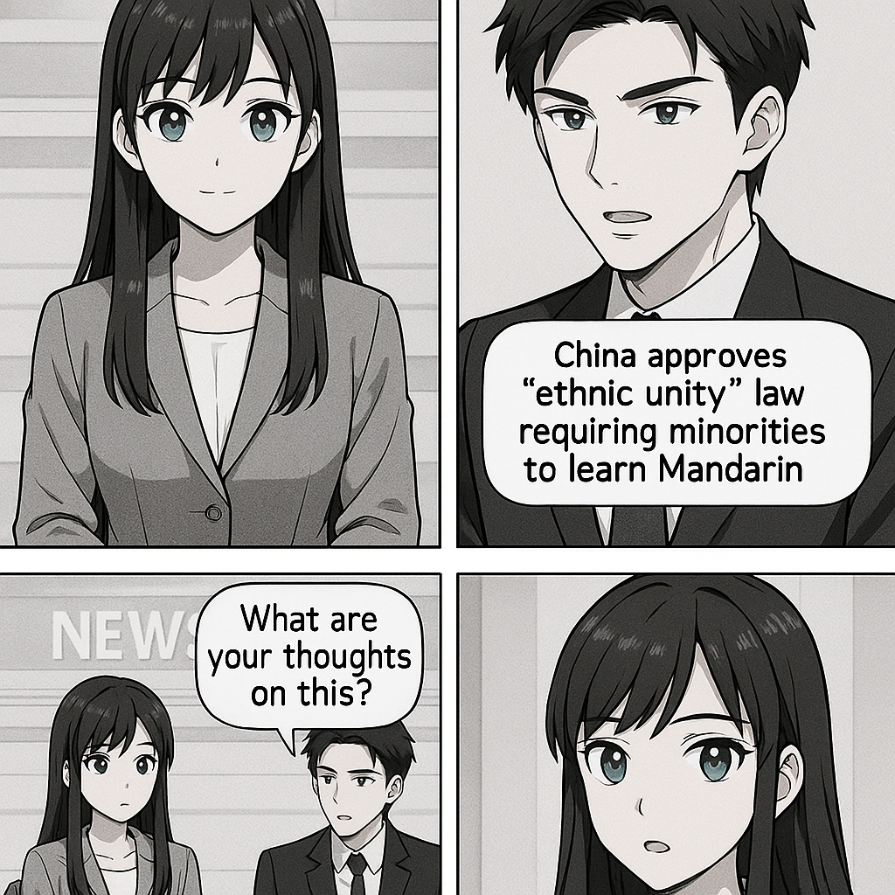

こんにちは、ミライです！今日は、中国で新しくできた「民族団結」についての法律についてわかりやすく説明しますね。 この法律は、中国に住む少数民族の子どもたちが「普通話」（中国の共通語、マンダリン）を勉強することを求めています。具体的には、幼稚園に入る前から高校を卒業するまで、ずっとマンダリンを学ぶことが決められました。 目的は、中国のいろいろな民族がお互いに理解しやすくなり、仲良く暮らせるようにすることですが、一方で、少数民族の言葉や文化が守られるのか心配する声もあります。 つまり、この法律は「みんなが同じ言葉を話して団結しよう」という考えだけど、少数民族の自分たちの言葉も大切にしていくことが大事、ということなんです。 わかりやすかったでしょうか？ミライでした！

ソウマです。中国が新たに「民族団結法」を承認し、少数民族に標準中国語（マンダリン）の習得を義務付けました。これは中国共産党の同化政策の一環であり、少数民族の文化や言語を統制し、国家統一を強化する狙いがあります。一方で、言語や文化の多様性を抑圧するとの国内外からの批判も予想され、民族間の緊張が高まるリスクがあります。
トップへ戻る